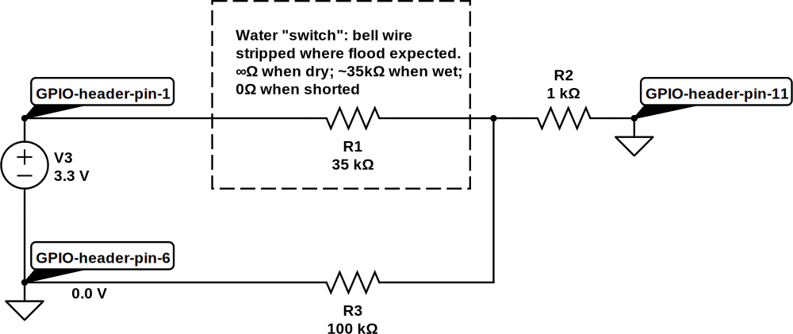

There's a poltergeist who lives in my basement. Either that, or I've had three completely coincidental pipe failures in the space of a couple of years. The last leak had such a high flow rate that if I hadn't wandered past in the morning and wondered what that hissing noise was we would have had a brand new swimming pool by the evening. The most worrying thing was that the leak came from a pipe joint that was brand new a year ago (and not fitted by me, either, but by a skilled professional1).
So I decided I needed a bit of long-term plumbing reassurance in the form of a water alarm that will send me an SMS text message whenever things get wetter than expected under the house. With a Pi and an alarm circuit like our parent alarm this turns out to be a nice project.
Materials used:
The trick here is to find a way to sense the presence of moisture. As water conducts electricity we can do this using a variation on one of our switching circuits: we'll run a length of two-core wire through all the areas where we expect flooding and strip each core so that a flood would connect the two cores together.
To decide on the values for the circuit that we'll use to connect to the Pi,
we need to test the resistance of the water connections using a multimeter; it
turns out that we have something between 20k and 50k ohms when the bare wire
is immersed. When the wire is dry (hopefully the long-term average!) the
resistance will be infinite (like an open switch). We also should expect that
the wires may touch (if someone steps on them and presses them together, for
example), so we also have to cater for a 0 ohms resistance. To deal with these
possibilities we'll use a 1k limiting resistor and a 100k pull down resistor
like this:

Here's what happens in our three cases:
The code to read from our water sensor is very simple: gpio mode 0 in sets things up, and gpio read 0 takes a reading. When things get wet (or there's a short circuit) the read statement will return 1; otherwise it will return 0.
TODO
{kind=link}